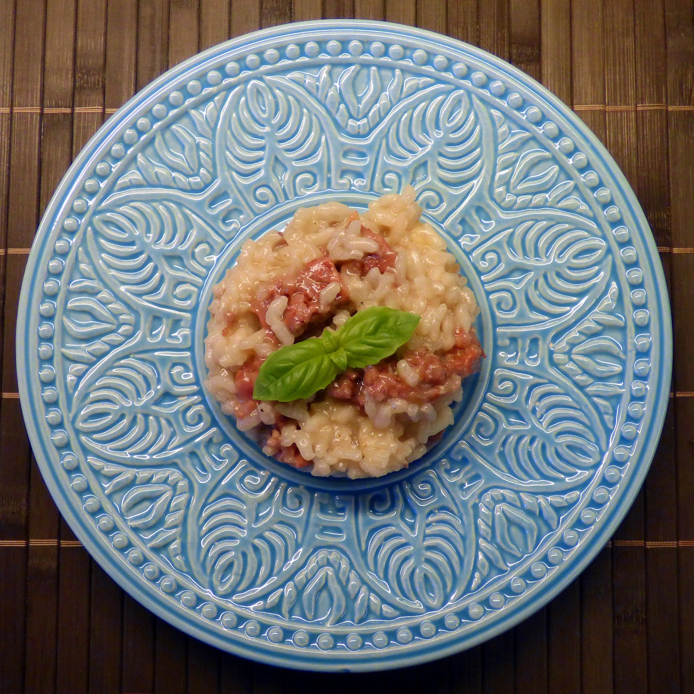

Risotto is an Italian dish, a classic comfort food that has gained international popularity. Risotto is a rice-based dish, with Arborio rice being the most commonly used variety. What sets risotto apart is the method of preparation, involving a slow and gradual addition of liquid to the rice, which results in a creamy consistency while maintaining a distinct bite. Risotto is perfect because it's versatile, allowing for a wide range of flavor variations.
